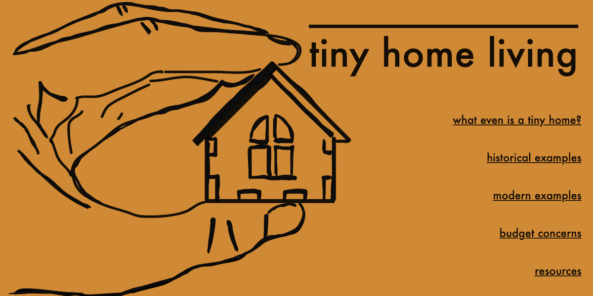
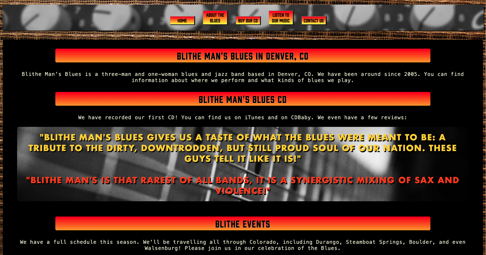
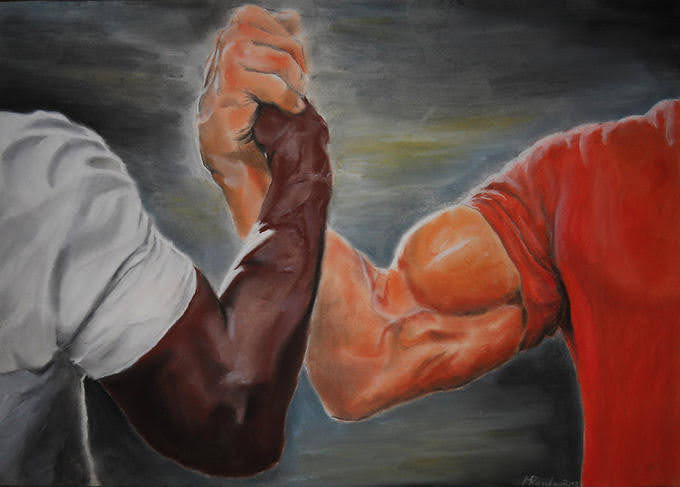

Projects

Tiny Home Project
This is my Tiny Home Project - inspired by "Tiny Home Living" on Youtube - a comeplete broshure website that gives boilerplate info about the "micro home" lifestyle.

Blues Band Website
A website for Blithe Man Blues - containing info about merchandise, tours and CD albums.

Hermit Simulator (Work-in-progress)
Super, top-secret text adventure that allows one to simulate choices the user would make to become the ultimate Hermit!

Film+TV Recommendation Wesbite (work-in-progress)
Film+TV Website using API web-scraper to delineate media popularity based on social media meme-sharing frequency.